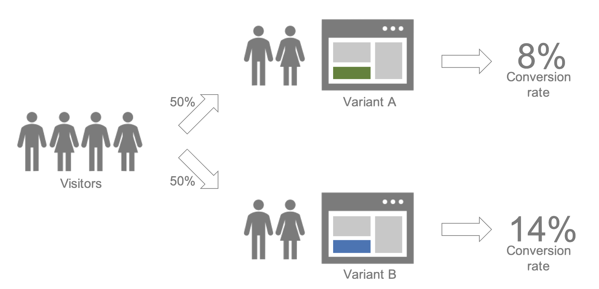

Welcome to prayas!¶
Prayas is a Bayesian A/B Testing framework written in Python and used within Avira to make business decisions in many different areas.
{kind=link}
Controlled experiments (A/B tests or randomized field experiments) are the de facto standard to make data-driven decisions when implementing changes and observing customer responses. Bayesian inference allows us to express the results in easy to understand measures like probability to be the best variant and expected uplift in conversion rates.
The prayas package currently implements three experiment scenarios that are common in our company:
One option model – A variant contains only one option to select
Multi-options model – A variant can contain more than one option to select
Aggregated model – Per variant only aggregated measures are observed
See Examples for an illustration of each model. The underlying methodology is described in Bayesian A/B Testing for Business Decisions by Shafi Kamalbasha and Manuel J. A. Eugster (2020).
Contents¶
Version¶
Documentation based on prayas version 0.1; generated on Nov 27, 2020.
Feedback¶
In case of any bug, comments, feature requests, etc. please open an issue on the project Github page.
Contributors¶
Shafi Kamalbasha
Alin Secareanu
Manuel Eugster